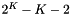
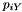
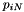
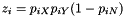
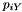
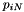
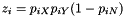

|
lego
0.1
Lego is a system of programs written in C and Python, which uses counts of nucleotide site patterns to infer thehistoryofpopulationsize,subdivision,andgeneflow.
|
|
lego
0.1
Lego is a system of programs written in C and Python, which uses counts of nucleotide site patterns to infer thehistoryofpopulationsize,subdivision,andgeneflow.
|
Lego is a computer package that uses counts of nucleotide site patterns to estimate the history of population size, subdivision, and gene flow. It works by minimizing the difference between observed and expected counts of "nucleotide site patterns". Site patterns are summary statistics that are rich in information about sizes of and relationships among ancestral populations but are not influenced by the recent population size. So what is a site pattern?
Consider a sample consisting of one haploid genome drawn from each of 3 populations, X, Y, and Z. Suppose that, at a given nucleotide site, the derived allele is present in the genomes from X and Y but not that from Z. If so, then this nucleotide position will be said to exhibit the "*xy* site pattern." We ignore cases in which the derived allele is present in none of the samples, in only one of them, or in all of them. In other words, we consider only polymorphic, non-singleton site patterns. For the special case of the 3-population sample just described, there are only 3 such site patterns: xy, xz, and yz.
In the general case, with samples from K populations, the number of site patterns is . For example, there are 10 site patterns in a sample involving  populations. The table below shows data from a sample involving 4 populations, X, Y, N, and D.
populations. The table below shows data from a sample involving 4 populations, X, Y, N, and D.
SitePat E[count]
xy 340952.4592501
xn 46874.1307236
xd 46034.4670204
yn 55137.4236715
yd 43535.5248078
nd 231953.3372578
xyn 91646.1277991
xyd 88476.9619569
xnd 96676.3877423
ynd 100311.4411513
The E[count] column shows numbers that can be thought of loosely as counts of site patterns in a genome-wide sample. The last line tells us that the ynd site pattern occurs at over 100,000 nucleotide sites.
These number cannot really be counts, because they aren't integers. This reflects the fact that our sample includes more than one haploid genome from each population, and a given SNP may contribute to several site patterns. The contribution to a given site pattern is the probability that a sub-sample, consisting of one haploid genome drawn at random from the larger sample of each population, would exhibit this site pattern. For example, suppose we have samples from three populations, X, Y, and N, and let  , , and  represent the frequencies of the derived allele at the i*th SNP in these three samples. Then site pattern *xy occurs at SNP i with probability  (Patterson et al 2010, Science, 328(5979):S129). Aggregating over SNPs,
, , and  represent the frequencies of the derived allele at the i*th SNP in these three samples. Then site pattern *xy occurs at SNP i with probability  (Patterson et al 2010, Science, 328(5979):S129). Aggregating over SNPs,  summarizes the information in the data about this site pattern. These are the numbers that appear in the 2nd column of the table above.
summarizes the information in the data about this site pattern. These are the numbers that appear in the 2nd column of the table above.
The table above was generated by the program tabpat.
The package is available at github. Before compiling, you must install two libraries: pthreads and gsl. You will need not only the libraries themselves but also several header files, such as pthread.h. I didn't need to install pthreads, because it came bundled with the Gnu C compiler. But the gsl was an extra. Under ubuntu Linux, you can install it like this:
sudo apt-get install libgsl0-dev
On the mac, using homebrew, the command is
brew install gsl
By default, the executable files will be copied into a directory named bin in your home directory. If you want them to go somewhere else, edit the first non-comment line of src/Makefile.
Then
This will try to place the executables into directory "bin" in the user's home directory. Make sure this directory appears in your PATH, so that the shell can find it.
To install in /usr/local/bin instead of $HOME/bin, type "sudo make ginstall". You'll need administrative privileges.
This installation will work under unix-like operating systems, such as linux and Apple's osx. I haven't tried to port this software to Windows.
The directory test contains a unit test for many of the .c files in directory src. Within this directory, type
to test the source file boot.c. To run all unit tests, type "make". This will take awhile, as some of the unit tests are slow.
Before doing data analysis with lego, you must generate data files in "daf" format. Such files end with ".daf", which stands for "derived
allele frequency. See the @ref daf "daf" command for instructions on
translating from "vcf" or "bcf" format into "daf".
The "daf" file is very simple and looks like this:
#chr pos aa da daf 1 752566 g a 0.835294117647058854 1 754192 a g 0.858823529411764652 1 755225 t g 0.000000000000000000 1 755228 t g 0.000000000000000000 1 765437 g a 0.000000000000000000
The first line (beginning with "#") is an optional comment, which is used here to label the columns. The columns are as follows:
The lines should be sorted lexically by chromosome. Within chromosomes, they should be sorted in ascending numerical order of column 2.
The ".lgo" format describes the history of population size, subdivision, and gene flow. It also identifies the position within the population network of each genetic sample. It is a plain-text file, which should be constructed with a text editor.
In the paragraphs below, I will introduce a small .lgo file a few lines at a time. The first line in my file is
# Example .lgo file
This is a comment. Comments extend from the sharp character to the end of the line. The next two lines define two convenience variables, whose names are "zero" and "one"
time fixed zero=0 twoN fixed one=1
The first is a "time" variable, which I will use for the tips of branches, where time equals 0. I declare it "fixed", which means that it will not change. The second is a "twoN" variable, which represents twice the size of a population. When there is only one sample per population, the sizes of recent populations do not matter, so I set them all equal to "one". Next, three more time variables named "Txyn", "Tn", and "Txy".
time free Txyn=25920 # archaic-modern separation time time fixed Tn=1897 # time of Neanderthal admixture time gaussian Txy=3788 sd=1000 # Africa-Eurasia separation time
The comments hint at the meanings of these variables; the values are in generations. The first of these variables is "free", which means that legofit will estimate its value. The second is "fixed", a category we have already discussed. The last is "gaussian", a new category. Gaussian variables are used to represent exogeneous parameters whose values are known only approximately. They are modeled as Gaussian random variables. In this case, the mean is 3788 and the standard deviation is 1000. The two programs, lego and legofit, use Monte-Carlo integration to integrate across the uncertainty in Gaussian parameters.
Next, our file declares two variables that represent population sizes:
twoN free 2Nn=1000 # archaic population size twoN free 2Nxy=10000 # early modern population size
These both happen to be free parameters, but we could also have declared them fixed or gaussian. Our measure of population size is twice the effective size of the population.
We have one more variable to declare:
mixFrac free mN=0.02 # Neanderthal admixture into y
The "mixFrac" command declares a "mixture fraction"–the fraction of a some population that drives from introgression. As above, it could have been fixed or gaussian.
The next few lines of the input file declare the segments of the population network. The first of these is
segment x t=zero twoN=one samples=1 # Africa
Here, "x" is the name of the segment, zero is the time at which it ends, and one is the population size. Note that "zero" and "one" are variables that we declared above. The "samples=1" phrase says that there is a genetic sample from the end of this segment. In other words, the date of the sample is "t=zero" in this example. If the segment has no samples, you can omit "samples=0". It is also possible to specify more than one sample, as in "samples=2". If you do this, the program will generate more complex site patterns, whose frequencies will depend on recent population size. In this situation, you would not want to set "twoN=one".
The next two lines are similar, and define two other terminal populations:
segment y t=zero twoN=one samples=1 # Eurasia segment n t=Tn twoN=2Nn samples=1 # Neanderthal
Segment "n" does not end at time zero, but rather at the time, Tn, of Neanderthal admixture. It has one sample, whose date is also Tn. This is a bit of a stretch, because it assumes that the Neanderthal genome lived at the same time as the episode of admixture. I make this assumption for simplicity–this is only an example. There are 3 more segments to declare:
segment y2 t=Tn twoN=one # pre-mig eurasia segment xy t=Txy twoN=2Nxy # early modern segment xyn t=Txyn twoN=2Nn # ancestral
These segments don't have a "samples" component, because none of them have genetic samples. Segment y2 represents the Eurasian population before the episode of admixture. Note that it ends at the same time as segment n. This is necessary, because we will want to mix y2 and n below to model gene flow. Also note that the size of xyn equals 2Nn–the same variable we used in setting the size of segment n. This establishes a constraint: the sizes of xyn and n will always be equal, no matter how the optimizer adjusts the value of 2Nn.
The rest of the .lgo file defines relationships between segments. This involves two statements: "mix" and "derive". Consider the mix statement first:
mix y from y2 + mN * n # y is a mixture of y2 and n
This says that y is a mixture of y2 and n, which must end at the same date. Specifically, a fraction mN of y comes from n and the remaining fraction comes from y2. Finally, we have 4 examples of the "derive" statement:
derive x from xy # x is child of xy derive y2 from xy # y2 is child of xy derive xy from xyn # xy is child of xyn derive n from xyn # n is child of xyn
These statements establish ancestor-descendant relationships between segments. Note that x and y2 both derive from xy, so xy has two "children", but x and y2 each have only one parent. On the other hand, segment y has two parents, as defined in the "mix" statement above.
Segments cannot have more than two parents or more than two children. All segments should descend, eventually, from a single root.
Using this .lgo file as input, lego -i 10000 produces
#########################################################
# lego: generate site patterns by coalescent simulation #
#########################################################
# Program was compiled: Dec 31 2016 10:15:33
# Program was run: Sat Dec 31 17:23:41 2016
# cmd: ./lego input.lgo -i 10000
# nreps : 10000
# input file : input.lgo
# not simulating mutations
# excluding singleton site patterns.
# SitePat E[BranchLength]
x:y 13860.8919110
x:n 34.1363577
y:n 505.0103002
The program reports the mean branch length in generations of three site patterns. For example, "x:y" refers to the pattern in which the derived allele is present in the samples x and y but not in n.
 1.8.11
1.8.11